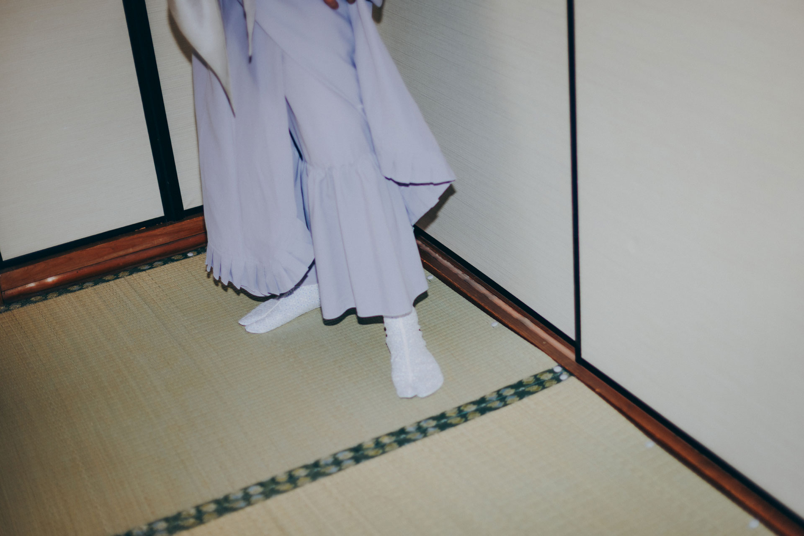

サク KYOTO
さく研究所の新しいものづくり「サク KYOTO」始まります。
心地よく上質な素材を使った日本のものづくり。
自由だけどルーズじゃない。
日常だけど特別な衣。
京都の街よりお届けです。
The new creative journey of Saku Laboratory begins.
Rooted in Japanese craftsmanship,
we create pieces using comfortable, refined, high-quality materials.
Free, yet never careless.
Everyday, yet always special.
Bringing you something special from the streets of Kyoto.




STORE INFO
居内商店（京都）
- Address
- 京都市東山区星野町 88-1
- Access
-
八坂の塔（法観寺）のすぐ目の前です。
※マップアプリ上では以前の店舗名が表示される場合があります。目の前にある八坂の塔を目印にお越しください。 - Open
- 11:00 - 19:00
- Closed
- 原則年内無休
ゴフクヤサンドットコム（大阪）
- Address
- 大阪府大阪市中央区船場中 3-2-7 船場センタービル 7号館 B1 北側
- Open
- 11:00 - 17:00
- Closed
- 原則年内無休